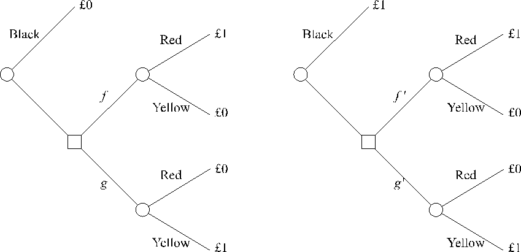

The arguments for Bayesianism in the literature fall into three broad categories. There are Dutch Book arguments, both of the traditional pragmatic variety and the modern ‘depragmatised’ form. And there are arguments from the so-called ‘representation theorems’. The arguments have many similarities, for example they have a common conclusion, and they all derive epistemic constraints from considerations about coherent preferences, but they have enough differences to produce hostilities between their proponents. In a recent paper, Maher (1997) has argued that the pragmatised Dutch Book arguments are unsound and the depragmatised Dutch Book arguments question begging. He urges we instead use the representation theorem argument as in Maher (1993). In this paper I argue that Maher’s own argument is question-begging, though in a more subtle and interesting way than his Dutch Book wielding opponents.
1 Bayesianism
What’s a Bayesian? The term these days covers so many different positions that the only safe course is to strictly define what one means by the term. The alternative, as the discussion in Walley (1996) shows, is to have one of the least interesting semantic debates ever held. I define a Bayesian to be one who is committed to two theses, which I’ll call (B1) and (B2).
- (B1)
-
Belief comes by degrees.
- (B2)
-
It is a requirement of consistency that these degrees of belief, or credences, be consistent with the probability calculus.
I should explain (B2) a little. Historically, Bayesians held that credences were, or at least ought be, reals in [0, 1], and the function Bel which takes any proposition into the agent’s credence in that proposition should be a probability function. Modern Bayesians, following Levi (1980) and Jeffrey (1983), allow that credences can be imprecise. In this case the consistency requirement is that there be some precisification of their credences which is a probability function. (B2) is deliberately ambiguous between the traditional and modern Bayesian positions, largely because nothing in this debate turns on this question1.
1 Historically the impetus for allowing imprecise credences was the economic distinction between insurable and uninsurable risks, as discussed in Knight (1921), Keynes (1937), Tintner (1941) and Hart (1942).
There are many other properties that could have been used to define Bayesians. For example, it could be suggested that it is requirement of being a Bayesian that one think rules like (B2) are derived by analysing credences as dispositions to bet. This is suggested by Kaplan (1993, 320) to be the “fundamental Bayesian insight”. Or it could be argued that being a Bayesian requires some an extra rule to the effect that credences are updated by conditionalisation. I haven’t included that for two reasons. First, I’m mostly interested in static constraints on credences, and secondly, some paradigm Bayesians like Levi (1980) and Fraassen (1989) reject this rule in its fully general form. Finally it might be suggested that Bayesians aren’t those that believe certain principles like (B1) and (B2), but only those who think these principles provide the foundation for all philosophy of science. So perhaps my definition is a bit liberal.
Now it is well known that not everyone’s a Bayesian. One group of non-Bayesians who have received too little attention from their Bayesian rivals are those who accept (B1) but not (B2). That is, theorists who agree there are such things as credences, and even that credences are important for philosophy of science, but not that they ought be constrained by the probability calculus. The most interesting example is the theory of evidence developed by (Dempster 1967, 1968) and Shafer (1976)
Dempster and Shafer, like many other theorists, think that when we have no evidence either for or against p, we should have low credences in both p and \({\lnot}\)p. In the limit case it is acceptable to have our credence in both p and in \({\lnot}\)p set at zero. Now this is in conflict with (B2), for it is a theorem of the probability calculus that Pr(p) + Pr(\({\lnot}\)p) = 1, and so by (B2) it is a requirement of rationality that Bel(p) + Bel(\({\lnot}\)p) = 0.
This intuition about cases where the evidence is low is formalised in a rather neat theory. For simplicity I’ll say how the theory works when we are interested in finitely many propositions; Shafer shows the infinite case can be dealt with but it doesn’t raise any philosophically interesting differences. We are interested in n propositions, so the possibility space contains 2n ‘worlds’. A proposition A can be identified in the usual ways with the set of worlds at which it is true. The Bayesian has us place a normalised measure on this possibility space, with our credence in A being the measure of the set A. In Dempster and Shafer’s theory we place a normalised measure, which they call a ‘mass function’ on the power set of the worlds, excluding the null set. Our credence in A is calculated as the measure of the set of sets which are subsets of A. So in the simplest case, where we are just interested in one proposition p, the mass function is defined on {{p}, {\({\lnot}\)p}, {p, \({\lnot}\)p}}. Complete ignorance is represented by giving {p, \({\lnot}\)p} mass one, and the other sets mass zero. Hence both Bel(p) and Bel(\({\lnot}\)p) are zero. On the other hand, Bel(p \({\vee}\) \({\lnot}\)p) will be one, as is Bel(C) for any classical tautology C. As a consequence of this we will not have the addition rule.
- Addition:
-
For disjoint A, B, Bel(A \({\vee}\) B) = Bel(A) + Bel(B)
Since Bayesians believe in Addition and some opponents do not, arguments for Bayesianism should be inter alia arguments for Addition. I don’t want to argue that Dempster and Shafer’s theory is right. It has some internal problems, particularly with updating, which make it look not too promising as a general theory of evidence. The recent collection edited by Yager, Fedrizzi, and Kacprzyk (1994) has papers dealing with many of these issues for the interested reader. My interest in this theory is merely to show the kind of theorist the Bayesian must argue against. This is particularly important when the alleged problem with arguments for Bayesianism is that they are question-begging.
As a last point about the Dempster-Shafer theory it might be noted that not only does Addition fail for credences, the equivalent rule for valuing bets also fails. Put formally, let an A-bet be a bet which pays £1 if A and nothing otherwise. It is consistent with the Dempster-Shafer theory to say the value of an A-bet is always £Bel(A). So on this theory it is not the case that for disjoint A, B it is true that the value of an (A \({\vee}\) B)-bet always equals the value of an A-bet plus the value of a B-bet.
Since it is sometimes thought there is an argument showing this to be incoherent, it is worthwhile giving a partial defence of its consistency. An argument like the following appears, as we’ll see, to be endorsed by Maher. There exists a voucher which is an (A \({\vee}\) B)-bet, a ticket which is an A-bet and a coupon which is a B-bet. Now anyone holding the ticket and the coupon will receive exactly the same payout in all circumstances as anyone holding the voucher, hence they must have the same value. Hence the value of the voucher is the value of the ticket plus the value of the coupon. The problem with this argument is that it assumes the ticket and the coupon are not what economists call complementary goods. Some goods, like say compact discs, have more value to a consumer if they hold certain other goods, like compact disc players. On the Dempster-Shafer theory, the ticket and the coupon may well be complementary goods. To anyone holding the ticket, the value of the coupon is the difference between value of the voucher and the value of the ticket, that is, Bel(A \({\vee}\) B) - Bel(A). This will in general be greater than its ‘intrinsic’ value Bel(B). But this goes no way to showing that its value to someone without the ticket must be greater than Bel(B). This, in rough outline, is the objection Schick (1986) makes to Dutch Book arguments. So arguments for Addition which assume that A-bets and B-bets are not complements will beg the question against proponents of the Dempster-Shafer theory, who have a principled reason to reject that assumption.
2 Dutch Book Arguments
As I mentioned above, there are three broad categories of arguments for Bayesianism, two breeds of Dutch Book arguments and ‘representation theorem’ style arguments. In this section I’ll briefly deal with the Dutch Book arguments before looking at Maher’s version of the representation theorem argument in section 3.
The classic, pragmatic, Dutch Book argument, assumes that appropriate circumstances exist whereby the amount an agent would be prepared to pay for any A-bet is £Bel(A). Indeed, they assume this not only is true, but that it would remain true while the agent starts trading in bets. Given these assumptions, if the agent’s credences are not a probability function, a clever bookie who knows just their credences can sell them a ‘Dutch Book’ which is guaranteed to lose in all circumstances.
Everyone’s got their favourite objection to this argument, so I won’t spend much time on it here. Maher (1993, 98) argues that the declining marginal utility of money means that this won’t work for pounds, and since there is no currency with a constant marginal utility this flaw can’t be resolved. This is a rather odd objection since Savage (1954) argued long ago that we could get around this problem by using bets denominated in lottery tickets. As mentioned above, Schick (1986) takes the possibility of complementary bets to be a crushing blow to the argument. My favourite objection turns on the distinction that Adam Smith famously drew attention to between the usefulness of a good and its market value. Bel(A) can determine, at most, the usefulness of an A-bet, so at disequilibrium a coherent agent should probably not trade A-bets for £Bel(A). And since there’s Dutch Books to be sold we must be at disequilibrium, so the initial assumption about ‘appropriate circumstances’ must be false. In any case, there are enough different objections to this argument that we can safely move on.
The depragmatised Dutch Book arguments, as in Howson and Urbach (1989), Christensen (1996) and Hellman (1997), do away with the prospect of a bookie actually milking the poor incoherent agent. Rather they use similar reasoning to show that there is something wrong with an agent whose credences are not probability functions. I will concentrate on Christensen’s argument, but similar comments apply to the other two arguments.
Christensen does not believe that an agent who’s credence in A is x should be prepared to buy a A-bet for £A. However he does say that the agent should “evaluate such [trades] as fair” (Christensen 1996, 456). So credences may ‘sanction’ (his term) certain odds even if the agent does not desire to accept these sanctioned bets. This may come about because of the declining marginal utility of the currency in which the bets are denominated, or because of a dislike of gambling, or possibly because of the discrepancy I mentioned between use-value and exchange-value. Now making the safe enough assumption that credences that sanction trades which lead to sure loss are defective he concludes that credences which do not satisfy the probability calculus are defective.
However, Maher (1997, 301–3) points out, the argument so far doesn’t get the conclusion Christensen wants. Indeed for some simple Shafer functions which are not probability functions no sure-loss trades will be sanctioned. To get Christensen’s conclusion, we need the extra premise that if two trades are sanctioned their sum is sanctioned. Equivalently, we need the premise that what bets are sanctioned is independent of what bets are already held. But given the definition of ‘sanction’ this just is the premise that credences must satisfy Addition. So the argument is question-begging against the writer who denies Addition. Maher shows that similar problems beset the arguments in Howson and Urbach (1989) and Hellman (1997).
3 Representation Theorems
The alternative Maher supports is based around ‘representation theorems’. A similar approach is taken by Kaplan (1996), but I’ll focus on Maher. In any case, the issues that arise are exactly the same. The basic idea is that it is a requirement on the coherence of an agent’s preferences that there exist a probability function and a set of utility functions equivalent up to affine transformation such that the agent prefers gamble f to g iff the expected utility of f given the probability function and any of the utility functions is greater than that of g. The probability function will give us the agent’s credences in all propositions. Preferences are decreed to be coherent if they satisfy a number of axioms that Maher defends. For example, it is required that preferences be transitive, that an agent not prefer f to g and prefer g to f, and so on. The claim here is that the defence of these axioms begs the question against a supported of the Dempster-Shafer approach.
Strictly Maher does not quite believe that all coherent credence functions are probability functions. The argument to that conclusion requires that preferences be complete, and Maher does not think this is plausible. If we drop that assumption we get the conclusion that the agent’s credences should be represented by sets of probability functions as in Levi and Jeffrey, not a single probability function. However for convenience he assumes first that completeness holds, and I’ll follow this lead. Nothing pertaining to the success or otherwise of the argument turns on this point.
There are a few immediate problems with this approach. Maher needs to assume that if an agent has a higher credence in p than in q they will prefer a p-bet to a q-bet. The problem is that when it is unlikely that we will ever see p or \({\lnot}\)p confirmed we may well prefer a q-bet to a p-bet even if we have a higher degree of belief in p. I would prefer a bet on the Yankees winning the next World Series to a bet on Oswald being Kennedy’s assassin, even though I have a higher degree of belief in Oswald’s guilt than the Yankees’s success, because betting on the Yankees gives me some chance of getting a payout.
Maher is aware of this point, but his attempt to dispose of it is disastrous. His example is comparing a bet on the truth of the theory of evolution, construed as the claim that all life on earth is descended from a few species, with betting on its negation Maher (1993, 89). Taking scientists as his expert function he asks some biologists which of these bets they would prefer, on the assumption that there are extraterrestrials who have been observing earth from its formation and will adjudicate on the bet. He is rather happy that they all plump for betting on Darwin. But this is a perfectly useless result. The objection was that we can have degrees of belief on unverifiable propositions, but our attitudes to bets on these propositions will be quite different to our attitude towards bets on verifiable propositions. He has attempted to counter this by simply making the problematic proposition verifiable. When we drop the assumption that there are extraterrestrials, so the theory of evolution would become unverifiable, presumably most people would (strictly) prefer a bet on a fair coin landing heads to either a bet on the theory of evolution or its negation. Preferences in a situation when the theory is verifiable are completely irrelevant to the problem unverifiable theories pose for Bayesian philosophies of science. So we have a problem, although I’d be prepared to accept for the sake of the argument it can be finessed.
The major problem for Maher is that his argument is just as question-begging as the Dutch Book arguments he criticises, though in a more subtle and interesting way. For Maher’s argument to work we have to accept some constraints on preferences, such as transitivity. His argument is only as strong as the argument for these constraints. He has nine axioms which must be justified in some way2. The most interesting is Independence, which he construes as follows. D is a set of gambles and X a set of propositions, f \({\leq}\) g means the agent either prefers g to f or is indifferent between them, f \({\equiv}\) g means that f and g are exactly the same gamble, they have the same payouts in all possible worlds, and f \({\equiv}\) g on A means that on all possible worlds in which A, f and g have the same payouts.
2 There is a further axiom designed to guarantee countable additivity, but that raises independent problems and won’t be discussed here.
- Independence
-
For all f, f\(^\prime\), g, g\(^\prime\) \({\in}\) D and A \({\in}\) X, if f \({\equiv}\) f \(^\prime\) on A, g \({\equiv}\) g\(^\prime\) on A, f \({\equiv}\) g on \({\lnot}\)A, f \(^\prime\) \({\equiv}\) g\(^\prime\) on \({\lnot}\)A and f \({\leq}\) g then f \(^\prime\) \({\leq}\) g\(^\prime\) (Maher 1993, 190)
The idea is that if f and g have the same payouts given some proposition, say A, our preference between f and g should be independent of its value. All that matters, according to this idea, is the comparative fact that if A turns out true f and g have identical payouts, so whichever of the bets is preferred given \({\lnot}\)A should be preferred overall. The most famous examples where intuition says this may be violated are the Allais and Ellsburg ‘paradoxes’. Since uncertainty plays a larger role in it, I’ll briefly sketch the Ellsburg paradox. An urn contains 90 balls. Thirty of these are yellow, and remainder are either black or red in unknown proportion. The payouts for the four gambles in question are given in this table.
| Red | Black | Yellow | |
| f | £1 | 0 | 0 |
| g | 0 | 0 | £1 |
| f\(^\prime\) | £1 | £1 | 0 |
| g\(^\prime\) | 0 | £1 | £1 |
Many subjects prefer g to f, since they know the chance of a yellow ball being drawn but not that of a red ball, but prefer f\(^\prime\) to g\(^\prime\) since they know the chance of a red or black ball being drawn but not that of a black or yellow ball. This is easily justifiable under the Dempster-Shafer approach. Let B, R and Y be the propositions that a black, red and yellow ball respectively is drawn. Given the evidence about the composition of the urn, it seems plausible to set Bel(B) = Bel(R)=0, Bel(Y)=Bel(Y\({\vee}\)B) = Bel(Y\({\vee}\)R) = \(\frac{1}{3}\) and Bel(B\({\vee}\)R) = \(\frac{2}{3}\). Bayesians say this is coherent, but it is perfectly acceptable under a Dempster-Shafer theory. Given these credences, the value of f is £0, and the value of g is £\(\frac{1}{3}\). However the value of f\(^\prime\) is £\(\frac{2}{3}\) while the value of g\(^\prime\) is just £\(\frac{1}{3}\). Hence it is not only acceptable, but arguably a requirement of rationality that an agent prefer g to f but f\(^\prime\) to g\(^\prime\).
With these preferences, and setting A to ‘A black ball is not drawn’ we can see this violates Maher’s independence axiom. No objection yet, many people are just irrational. The real problem arises with Maher’s argument that people who choose in this way are irrational. The following two choice trees set out two ‘tree form’ versions of the choices facing these subjects.

The left-hand tree represents the choice between f and g. The subject is told that if a black ball is drawn they will receive nothing, but if it is not drawn they will have a choice between betting on red and betting on yellow. So far we have a standard enough dynamic choice problem. Maher proposes to make it synchronic by requiring that subjects specify in advance what they would do if they reached the square, that is if a black ball is not drawn. This, he claims, makes the situation exactly as if the agent was choosing between f and g. Now the right-hand tree is the same as the left-hand tree in all respects but one. If a black ball is drawn the agent receives £1, not nothing. But the only choice the agent has to make is exactly the same as in the left-hand tree, so they ought make the same choice. We can concede to Maher here that it would be irrational to specify, in advance, a preference for g over f in the left-hand tree and for f\(^\prime\) over g in the right-hand tree. This is, however, insufficient for his conclusion.
The problem lies in his assumption that “it seems uncontroversial that the consequences a person values are not changed by representing the options in a tabular or tree form” Maher (1993, 71). As Seidenfeld (1994) makes clear, this is exactly what is controversial in these circumstances. Indeed this premise, call it Reduction, is expressly denied by a number of heterodox decision theorists, and by writers who deny Addition on the occasions they talk about decision theory. There is a good reason for this. As noted above, on the Dempster-Shafer theory, Bel(B\({\vee}\)R)may be greater than Bel(B)+Bel(R). When evaluating the worth of choosing f\(^\prime\) in the original, tabular, it seems plausible that it is Bel(B\({\vee}\)R) that matters, not Bel(B)+Bel(R). However in the tree form problem all that matters to f\(^\prime\) is Bel(B), for the possibility that we won’t need to choose, and Bel(R), for the possibility that we do.
The point is that Maher has to either assume agents only consider Bel(B) and Bel(R) when assessing f\(^\prime\), not Bel(B\({\vee}\)R), or that Bel(B\({\vee}\)R) is some function of Bel(B) and Bel(R) so that we can ignore that complication, in his ‘uncontroversial’ assumption. The first option is implausible, surely when comparing f\(^\prime\) and g\(^\prime\) we just compare Bel(B\({\vee}\)R) with Bel(B\({\vee}\)Y). More interestingly, I claim that the second is question-begging. Given that virtually everyone agrees that in some cases, for example lotteries, degrees of belief should be probability functions, in some cases the function which gives us Bel(B\({\vee}\)R) from Bel(B) and Bel(R) must be addition. Hence he must assume that Bel(B\({\vee}\)R) = Bel(B)+Bel(R) for the move from tabular to tree form to be plausible. But this is just what he was trying to prove, so the argument is question-begging.
4 Conclusion
Maher rightly objects to depragmatised Dutch Book arguments on the ground that they are question-begging. That is, they use their conclusion as an implicit premise. It is argued here that the same objection applies to Maher’s argument for Bayesianism. He relies on the reducibility of tree form decisions to table form decisions, but the only justification for this could be a reliance on Addition. But Addition was what he was trying to prove all along, so he isn’t allowed to take Reduction as a premise.
There are three moves that Maher could make here. First, he could say that Reduction is so obvious that it should be acceptable as a premise without justification. The resulting argument may be effective at convincing some agnostics about Bayesianism that their implicit assumptions all along were Bayesian, but it would be completely ineffective against the sceptics about Bayesianism I have been discussing. Secondly, he could come up with a new argument for Reduction that I haven’t considered here and isn’t vulnerable to this objection. Given the conclusions of the last section I doubt this is possible, but the ingenuity of philosophers shouldn’t be underestimated. Thirdly, and most interestingly, he could look for justifications of Bayesianism that do not rely on construing credences as dispositions to bet. Since the arguments from considerations about preferences to constraints on credences have so far all failed, the time might be right to look at the problem from a different direction.
References
Citation
@article{weatherson2001,
author = {Weatherson, Brian},
title = {Begging the {Question} and {Bayesians}},
journal = {Studies in History and Philosophy of Science Part A},
volume = {30},
number = {4},
pages = {687-697},
date = {2001-04},
doi = {10.1016/S0039-3681(99)00020-5},
langid = {en}
}